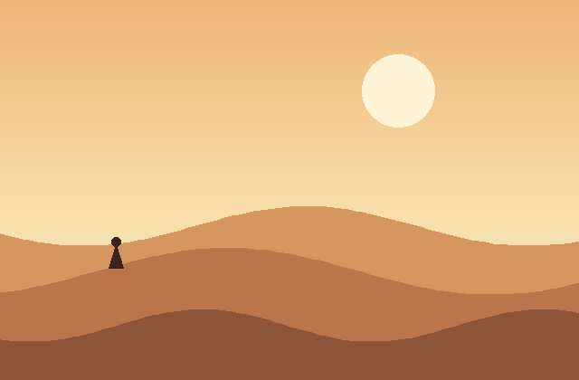
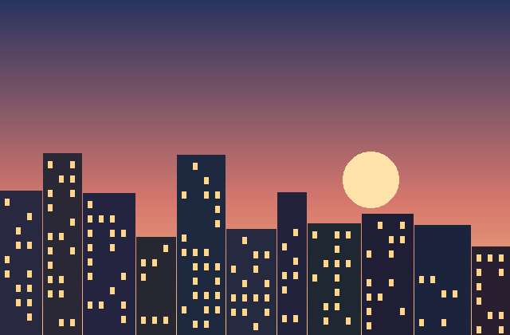
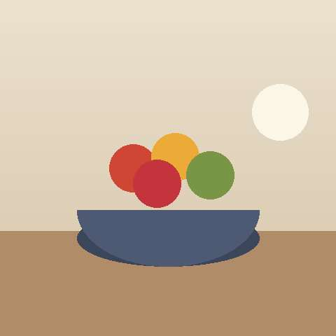
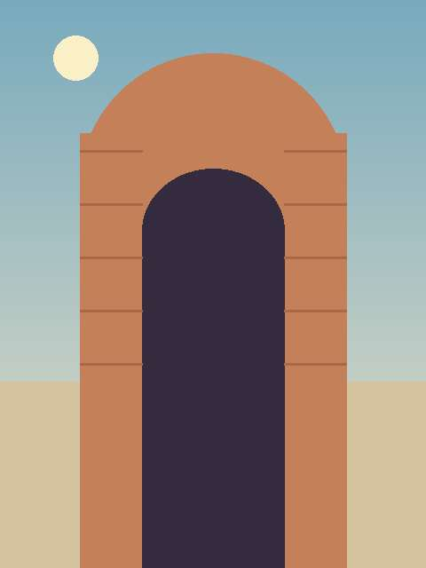
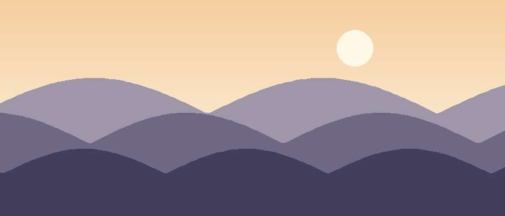
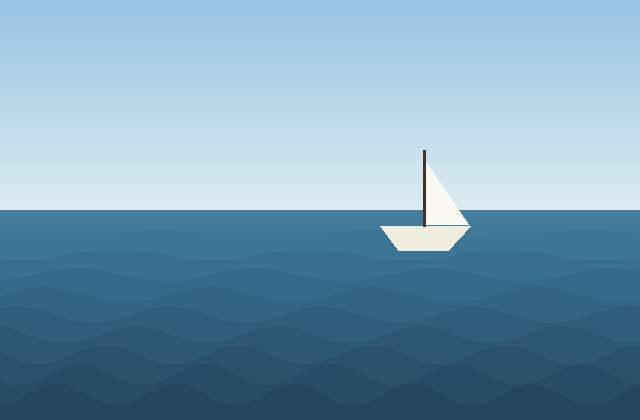
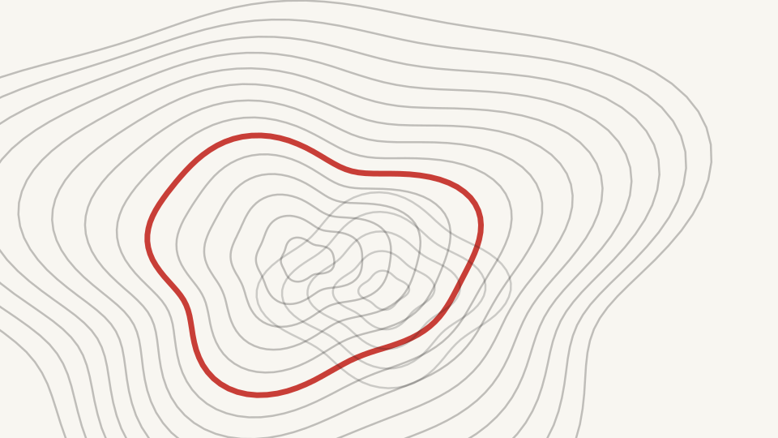
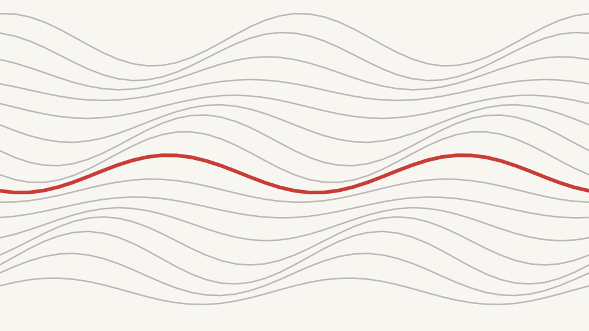
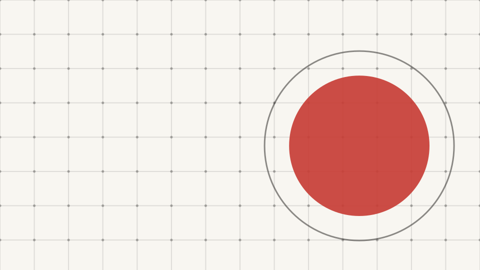
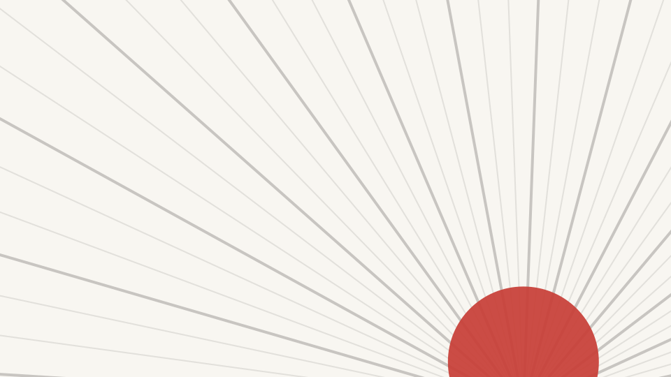

nm-ar-16x9 إطار مع شارة مصدركل إطار وقناع ومعالجة في nm-media.css. الصور مرسومة محلياً ولا تحتاج إلى شبكة.
القص عبر object-fit: cover مع نقطة التركيز --focus-x / --focus-y (هنا الشمس عند 70% و 25%).

nm-ar-16x9 إطار مع شارة مصدر
nm-ar-4x3
nm-ar-1x1
nm-ar-3x4
nm-ar-21x9 بانوراماأقنعة متجهية حادة. الانحناء والخطوات تنعكس تلقائياً في الاتجاه من اليمين إلى اليسار.
nm-mask-archnm-mask-circle
nm-mask-blobnm-mask-slantnm-mask-tabnm-mask-notchتُحسب في المتصفح من ألوان السمة --nm-ink و --nm-paper و --nm-accent. لا حاجة إلى خبز الصورة.
nm-duotonenm-duotone nm-duotone-accentnm-mononm-tintnm-vignettenm-grain-heavynm-halftone أفضل على خلفية فاتحةnm-duotone nm-grain nm-vignette معاًالإطار الحي يتحرك فقط داخل .slide.active. زر الكشف يضيف الصنف .is-on كما تفعل الخطوات.
nm-kenburns تقريب بطيء نحو نقطة التركيزnm-parallax ثلاث طبقات بعمق مختلفnm-reveal-wipe يكشف من جهة بداية القراءةnm-img-bleed يملأ الشريحة، والتدرج يظهر من جهة النص (اليمين في العربية).
nm-img-stacknm-img-stripمولّدة بالأمر image_fetch.py placeholder بألوان السمة الافتراضية.

topo
waves
grid
rays